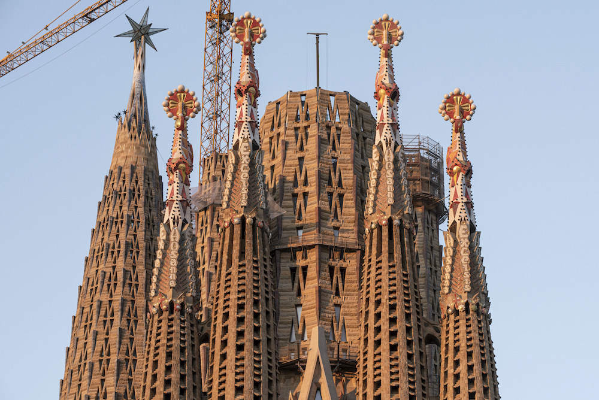
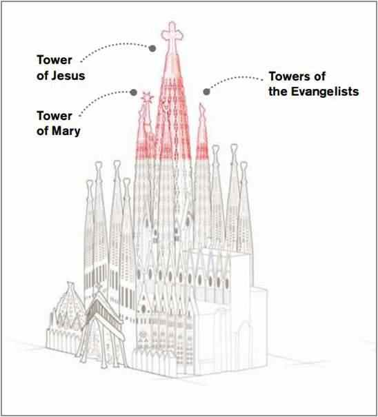

Designul original al lui Gaudí prevede un total de optsprezece turle, reprezentând, în ordine crescătoare a înălțimii, cei Doisprezece Apostoli, cei patru Evangheliști, Fecioara Maria și, cea mai înaltă dintre toate, Iisus Hristos. Până în 2023, treisprezece turle fuseseră finalizate, corespunzând celor patru apostoli de la fațada Nașterii Domnului, celor patru apostoli de la fațada Patimilor, celor patru Evangheliști și Fecioarei Maria.

Turlele Evangheliștilor sunt îcoronate de sculpturi cu simbolurile lor tradiționale: un taur înaripat (Sfântul Luca), un om înaripat (Sfântul Matei), un vultur (Sfântul Ioan) și un leu înaripat (Sfântul Marcu). Turla centrală a lui Iisus Hristos va fi încoronată cu o cruce uriașă; înălțimea sa totală (172,5 metri) va fi mai mică decât cea a Dealului Montjuïc din Barcelona, deoarece Gaudí credea că creația sa nu ar trebui să depășească pe cea a lui Dumnezeu.

Planurile prevăd plasarea de clopote tubulare în interiorul turlelor, acționate de forța vântului, care vor conduce sunetul în interiorul bisericii. Gaudí a efectuat studii acustice pentru a obține rezultate acustice adecvate în interiorul templului (în prezent este instalat un singur clopot).
Finalizarea turlei lui Iisus Hristos va face ca Sagrada Família să fie cea mai înaltă clădire bisericească din lume, cu 11 metri mai înaltă decât actualul deținător al recordului, Catedrala din Ulm, care atinge 161,5 metri la punctul său cel mai înalt.
Pe 29 noiembrie 2021, o stea luminată cu douăsprezece colțuri, având 7 metri înălțime, a fost instalată pe una dintre principalele turnuri ale bazilicii, dedicată Fecioarei Maria. Construcția utilizează panouri de piatră precomprimată, care sunt preasamblate înainte de a fi integrate în structura principală; această metodă aduce beneficii structurale și operaționale semnificative.